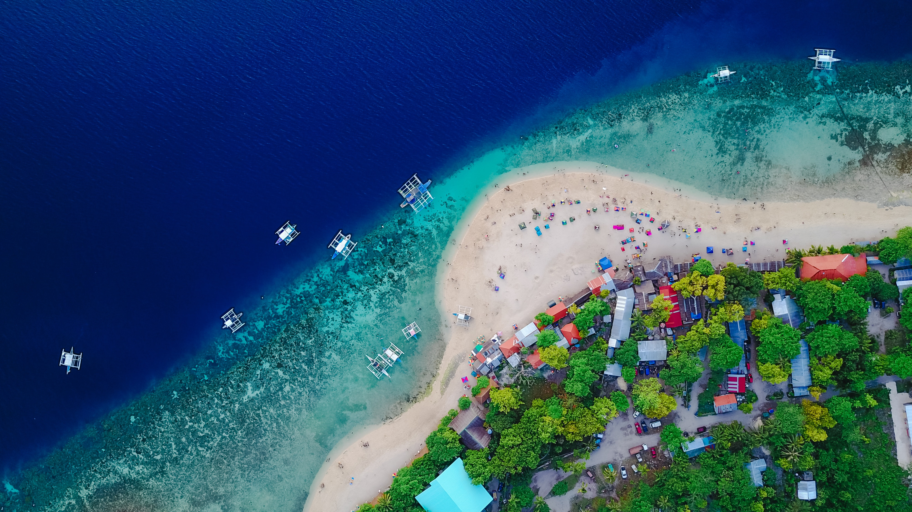
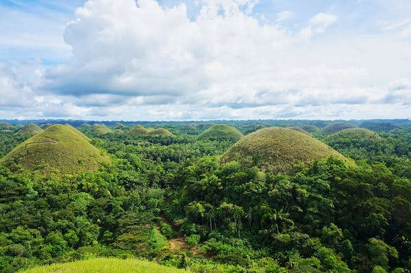
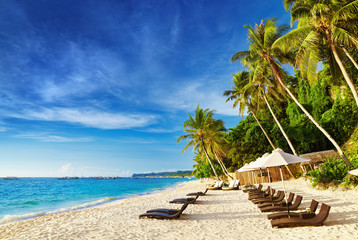
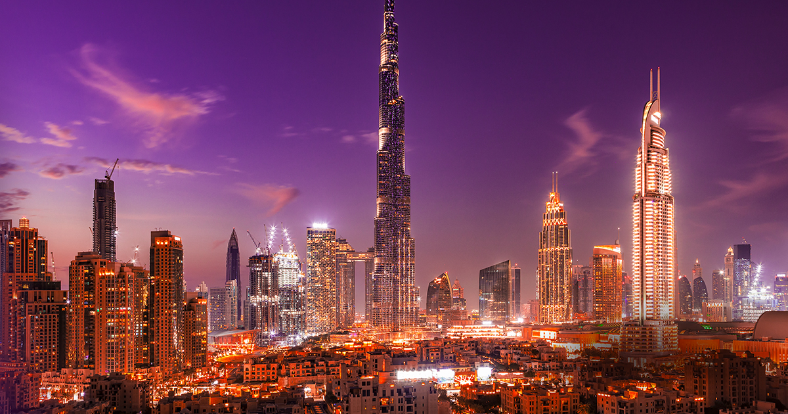
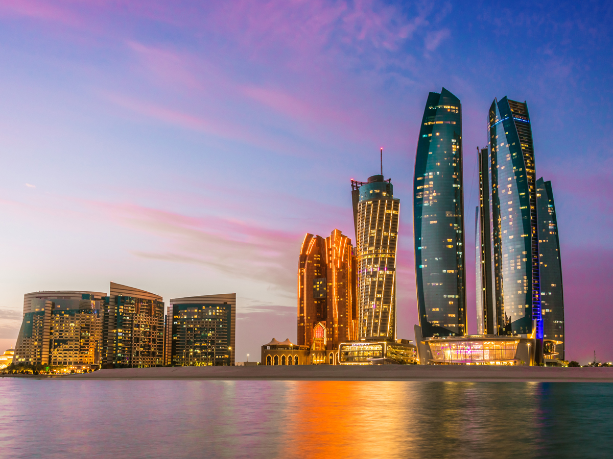
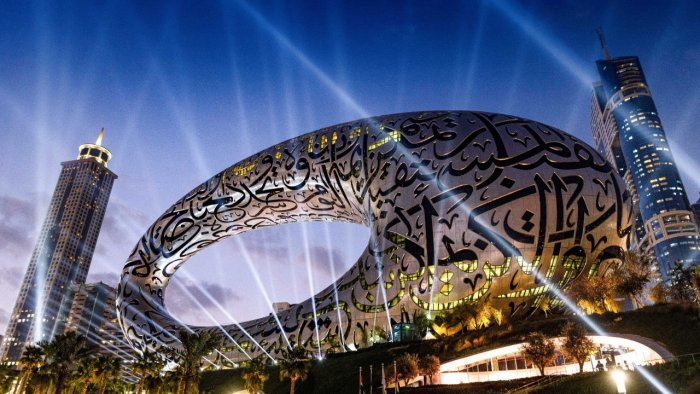
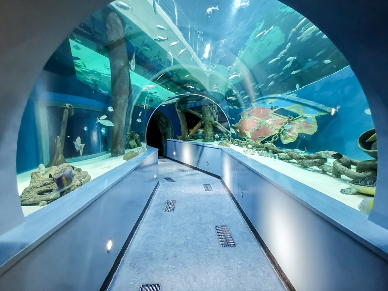
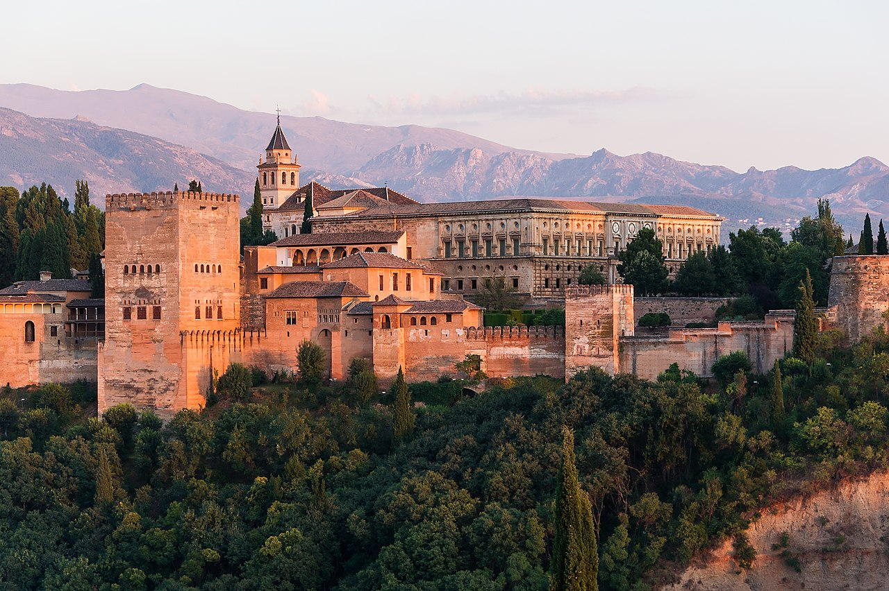
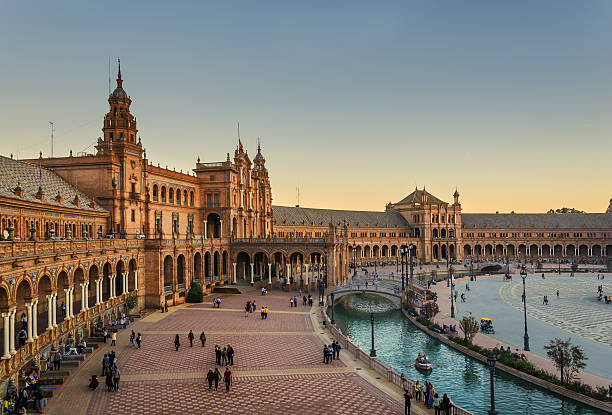
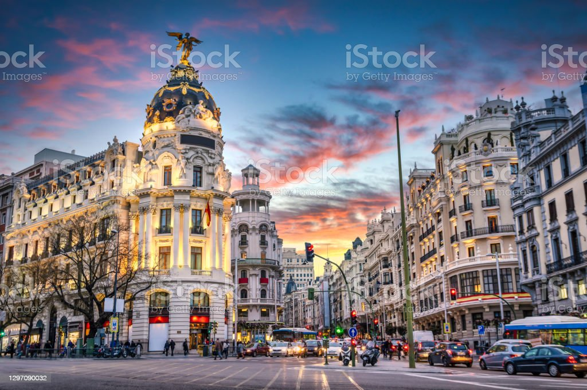

Let's Explore The World
LISTS OF THE COUNTRIES THAT ARE AVAILABLE NOW
- Philippines
- UAE
- Spain
My Recently Visites Places
>
Egypt
I traveled the city cairo with my Mum and my Abbu.I also encounterd with the great pyramid of Giza
Kingdom Of Saudi Aribia
I traveled the city of Medina,Tayef and Jeddah
Let's Take a Look On The Packages
Writting About The Places That I wanted To Visit
Philippines

Philippines, island country of Southeast Asia in the western Pacific Ocean. It is an archipelago consisting of more than 7,000
islands and islets lying about 500 miles (800 km) off the coast of Vietnam. Manila is the capital,
but nearby Quezon City is the country’s most-populous city.
Both are part of the National Capital Region (Metro Manila), located on Luzon, the largest island.
The second largest island of the Philippines is Mindanao, in the southeast.
Manila
Manila (/məˈnɪlə/ mə-NIL-ə, Spanish: [maˈnila]; Filipino: Maynila, pronounced [majˈnilaʔ]), officially the City of Manila
(Filipino: Lungsod ng Maynila, [luŋˈsod nɐŋ majˈnilaʔ]), is the capital and second-most populous city of the Philippines.
Located on the eastern shore of Manila Bay on the island of Luzon, it is classified as a highly urbanized city.
As of 2019, it is the world's most densely populated city proper. It was the first chartered city in the country,
and was designated as such by the Philippine Commission Act No. 183 on July 31, 1901.
It became autonomous with the passage of Republic Act No. 409, "The Revised Charter of the City of Manila",
on June 18, 1949.
Chocolate Hills

The Chocolate Hills (Cebuano: Mga Bungtod sa Tsokolate, Tagalog: Mga Tsokolateng Burol) are a geological formation in the Bohol province of the Philippines.[1] There are at least 1,260 hills, but there may be as many as 1,776 hills spread over an area of more than 50 square kilometers (20 sq mi).[2] They are covered in green grass that turns brown during the dry season, hence the name.
The Chocolate Hills are a famous tourist attraction in Bohol
Boracay

Boracay ([bɔˈrakaɪ]; often locally shortened to Bora) is a resort island in the Western Visayas region of the Philippines, located 0.8 kilometers (0.50 mi) off the northwest coast of Panay. It has a total land area of 10.32 square kilometers (3.98 sq mi), under the jurisdiction of three barangays in Malay, Aklan,
and had a population of 37,802 in 2020.[
UAE

The United Arab Emirates (UAE; Arabic: الإمارات العربية المتحدة al-ʾImārāt al-ʿArabiyya l-Muttaḥida[nb 2]), or simply the Emirates (Arabic: الإمارات al-ʾImārāt), is a country in West Asia, in the Middle East. It is located at the eastern end of the Arabian Peninsula and shares borders with Oman and Saudi Arabia, while having maritime borders in the Persian Gulf with Qatar and Iran. Abu Dhabi is the nation's capital,
while Dubai, the most populated city, is an international hub.
Abu Dhabu

Abu Dhabi (UK: /ˈæbuːˈdæbi/, US: /ˈɑːbuːˈdɑːbi/; Arabic: أَبُو ظَبِي Abū Ẓabī Arabic pronunciation: [ɐˈbuˈðˤɑbi])[5] is the capital and second-most populous city of the United Arab Emirates, after Dubai.
It is also the capital of the Emirate of Abu Dhabi and the centre of the Abu Dhabi Metropolitan Area.
The city of Abu Dhabi is located on an island in the Persian Gulf, off the Central West Coast. Most of the city and the Emirate reside on the m
ainland connected to the rest of the country.
Sharjah

Sharjah (/ˈʃɑːrdʒə/; Arabic: ٱلشَّارقَة aš-Šāriqah, Gulf Arabic: aš-Šārja[1]) is the third-most populous city in the United Arab Emirates, after Dubai and Abu Dhabi. It is the capital of the Emirate of Sharjah and forms
part of the Dubai-Sharjah-Ajman metropolitan area.
Dubai

Dubai (/duːˈbaɪ/, doo-BY; Arabic: دبي, romanized: Dubayy, IPA: [dʊˈbajj], Gulf Arabic pronunciation: [dəˈbaj]) is the most populous city in the United Arab Emirates (UAE) and the capital of the Emirate of Dubai,
the most populated of the 7 emirates of the United Arab Emirates.
Spain

Tourism in Spain is a major contributor to national economic life, contributing to about 11.8% of Spain's GDP (in 2017).[1] Ever since the 1960s and 1970s, the country has been a popular destination for summer holidays, especially with large numbers of tourists from the United Kingdom, Ireland, Turkey, France, Germany, Italy, the Benelux, and the United States, among others. Accordingly, Spain's foreign tourist industry has grown
into the second-biggest in the world.[2]
Barcelona

Barcelona (/ˌbɑːrsəˈloʊnə/ (listen) BAR-sə-LOH-nə, Catalan: [bəɾsəˈlonə] (listen), Spanish: [baɾθeˈlona]) is a city on the northeastern coast of Spain. It is the capital and largest city of the autonomous community of Catalonia, as well as the second most populous municipality of Spain. With a population of 1.6 million within city limits,[7] its urban area extends to numerous neighbouring municipalities within
the province of Barcelona and is home to around 4.8 million people,
Seville

Seville (/səˈvɪl/ sə-VIL; Spanish: Sevilla, pronounced [seˈβiʎa] (listen)) is the capital and largest city of the Spanish autonomous community of Andalusia and the province of Seville. It is situated on the lower reaches o
f the River Guadalquivir, in the southwest of the Iberian Peninsula.
Madrid

Madrid is the capital and most populous city of Spain. The city has almost 3.4 million inhabitants and a metropolitan area population of approximately 6.7 million. It is the second-largest city in the European Union (EU), and its monocentric metropolitan area is the second-largest in the EU.[8][9][10] The municipality covers 604.3 km2 (233.3 sq mi) geographical area.[11] Madrid lies on the River Manzanares in the central part of the Iberian Peninsula. Capital city of both Spain (almost without interruption since 1561) and the surrounding autonomous community of Madrid (since 1983),[12] it is also the political, economic and cultural centre of the country.[13] The city is situated on an elevated plain about 300 km (190 mi) from the closest seaside location.
The climate of Madrid features hot summers and cool winters.